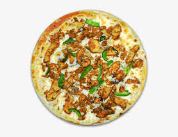

<!DOCTYPE html>
<html lang="en">

<head>
    <meta charset="UTF-8">
    <meta name="viewport" content="width=device-width, initial-scale=1.0">
    <title>FAGJTA PIZZA </title>
</head>

<body>

</html>
<a href="../INDEX.HTML">GO BACK</a>
<h1>FAJITA PIZZA</h1>

<p><B>Fajita pizza blends the vibrant flavors of Mexican cuisine with the comforting appeal of Italian pizza, creating a
        delightful fusion dish that satisfies both pizza enthusiasts and lovers of Tex-Mex flavors. At its core, fajita
        pizza typically features a thin crust topped with a medley of ingredients reminiscent of traditional fajitas.

        The base often consists of a tomato sauce infused with Mexican spices like cumin, chili powder, and garlic,
        lending a rich and slightly spicy undertone. This sauce provides a robust foundation for the toppings, which
        commonly include grilled or sautéed bell peppers, onions, and tender strips of seasoned chicken or
        beef—mimicking the filling of fajitas.

        Cheese plays a crucial role, with varieties such as Monterey Jack or a blend of cheddar and mozzarella, adding
        gooeyness and enhancing the flavor profile with their creamy textures. Sometimes, toppings like jalapeños,
        cilantro, and diced tomatoes are added to give a fresh, zesty contrast.

        The result is a pizza that marries the crispiness of a well-baked crust with the savory-sweetness of caramelized
        onions, the smokiness of grilled peppers, and the savory goodness of seasoned meat—all balanced by the tanginess
        of melted cheese and the occasional kick of spice. Fajita pizza not only celebrates the best of both culinary
        worlds but also invites creativity in its preparation, making it a popular choice for those seeking a unique
        twist on traditional pizza flavors.</B></p>
</body>

</html>